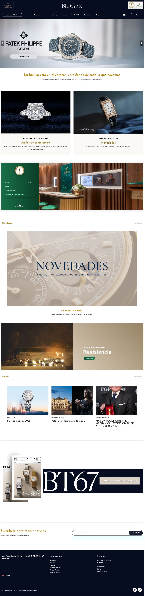
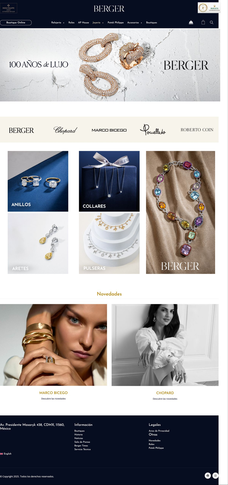

"No es solo una joyería. Es el hub de las marcas de lujo más importantes del mundo en México."
Berger Joyeros es el destino de alta joyería y relojería más reconocido de México. Con más de 100 años de historia y una cartera que incluye Rolex, Patek Philippe, Cartier y Audemars Piguet, el desafío era construir una presencia digital que estuviera al nivel de las marcas que representa — sin comprometer ni un solo estándar de ninguna de ellas.
Berger no es una tienda — es un ecosistema. Cada una de las 40+ marcas que representa tiene lineamientos visuales, tonos de comunicación y expectativas propias. Rolex tiene equipos internacionales que aprueban cada pixel. Patek Philippe exige discretion en el tratamiento de precios. Audemars Piguet tiene su propio lenguaje visual de lujo.
El sitio tenía que ser, simultáneamente, una herramienta de ventas directa, un catálogo de marca de nivel mundial, un canal B2B para distribuidores y socios, y una pieza de comunicación capaz de sostener el peso de un siglo de reputación.
Diseñamos y desarrollamos la plataforma completa de Berger: catálogo con más de 40 marcas y miles de productos, arquitectura de información que permite a cada marca mantener su identidad dentro del ecosistema Berger, y un sistema de navegación que guía al usuario desde el descubrimiento hasta la intención de compra.
La estrategia digital cubre medios pagados orientados a audiencias de alto poder adquisitivo, canales B2B para el segmento corporativo y coleccionistas, y optimización mensual continua. Llevar más de 5 años trabajando juntos nos ha dado un entendimiento profundo del comprador de lujo en México.
Pasa el cursor sobre cada pantalla para recorrerla.

